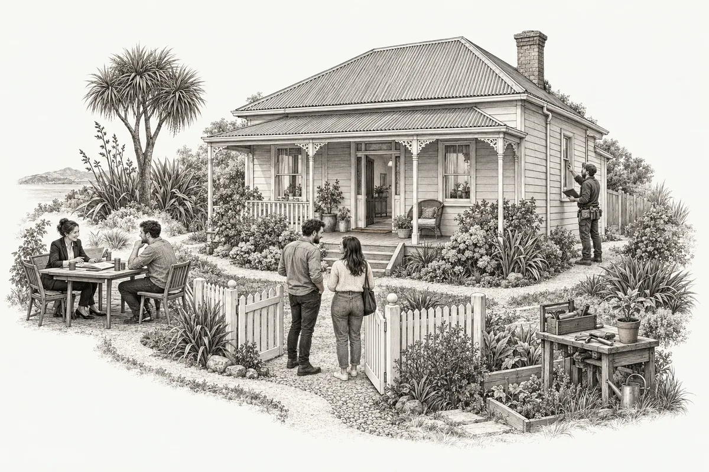

Skip to this chapter
⌂
A place of your own.
A FIRST-HOME FIELD GUIDE
World
map
↗
Field guide
Useful links
◌
AOTEAROA, NEW ZEALAND
A little world. A big life decision.

Opening chapter…
× Close selection
Choose a place or a person to begin.
All 10 decisions
↗
More to read below ↓
YOUR FIELD NOTES
×
A little more detail.
Enable JavaScript to explore the world. You can still read the
source notes
.